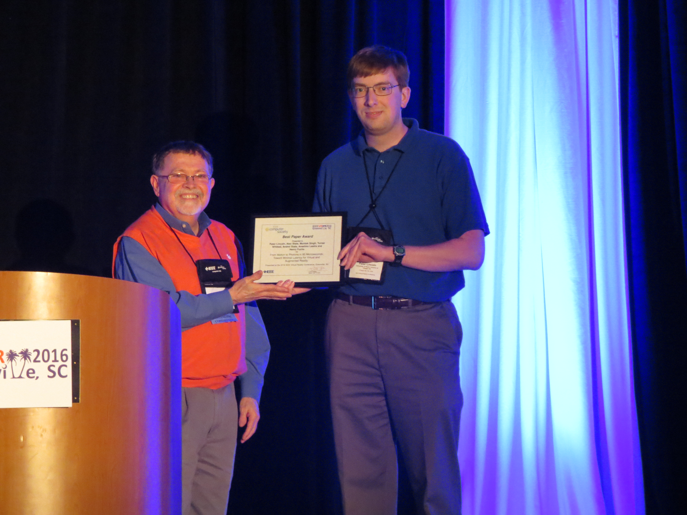
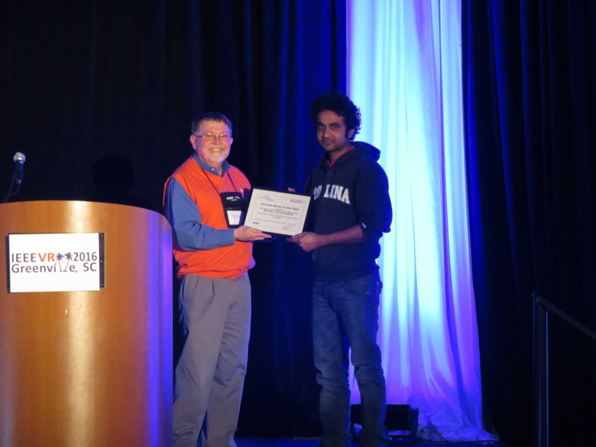
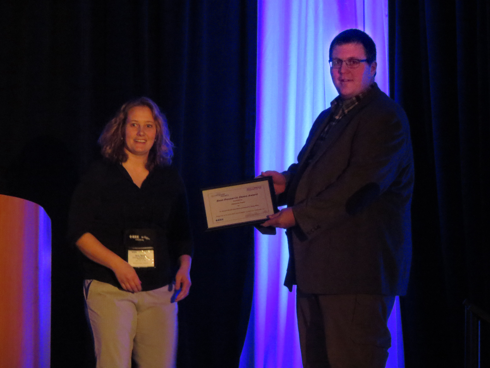
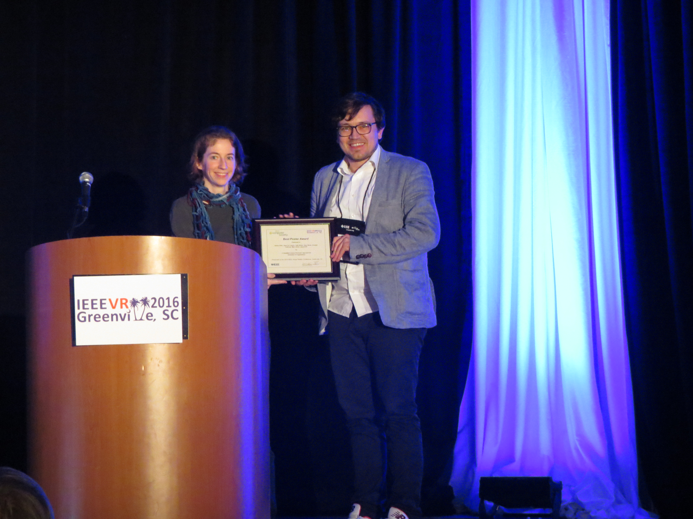
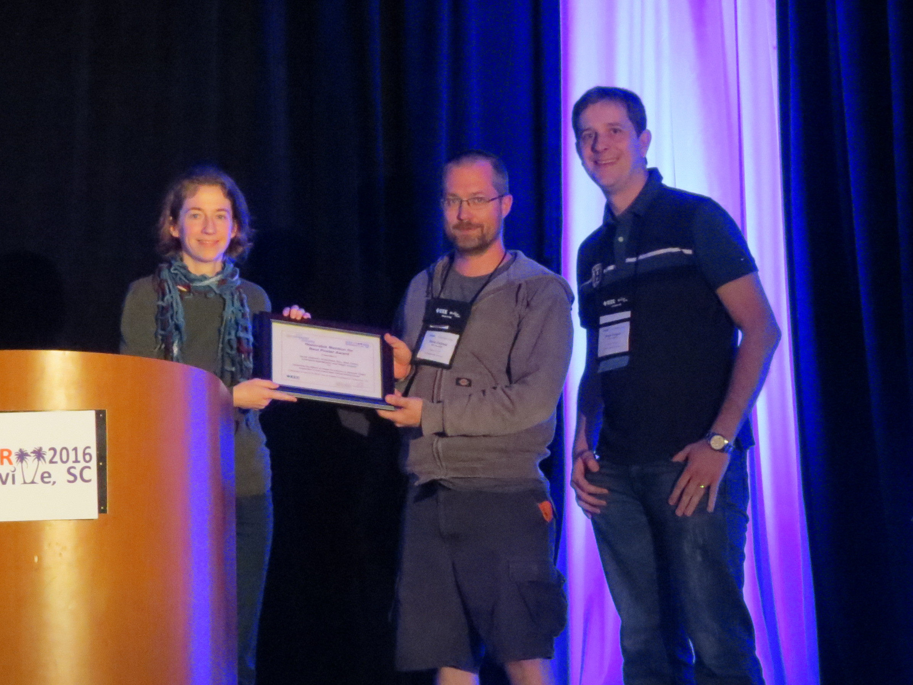

Best Paper Award

From Motion to Photons in 80 Microseconds: Towards Minimal Latency for Virtual and Augmented Reality
Peter Lincoln, Alex Blate, Montek Singh, Turner Whitted, Andrei State, Anselmo Lastra and Henry Fuchs
Honorable Mention for Best Paper

SynCoPation: Interactive Synthesis-Coupled Sound Propoagation
Atul Rungta, Carl Schissler, Ravish Mehra, Chris Malloy, Ming Lin, and Dinesh Manocha
Best Research Demo Award

An Ancient Roman Experience Enhanced by Using PIPES
Chauncey Frend
Honorable Mention for Best Research Demo
bioSync: Wearable Haptic I/O Device for Synchronous Kinesthetic Interaction
Jun Nishida and Kenji Suzuki
Best Poster Award

A Simplified Inverse Kinematic Approach for Embodied VR Applications
Daniel Roth, Jean-Luc Lugrin, Julia Büser, Gary Bente, Arnulph Fuhrmann, Marc Erich Latoschik
Honorable Mention for Best Poster

Evaluating the Effects of Image Persistence on Dynamic Target Acquisition in Low Frame Rate Virtual Environments
David Zielinski, Hrishikesh Rao, Nick Potter, Lawrence Appelbaum, Regis Kopper